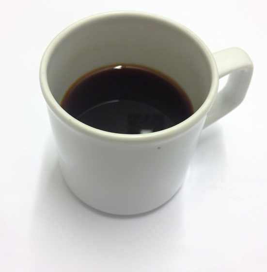
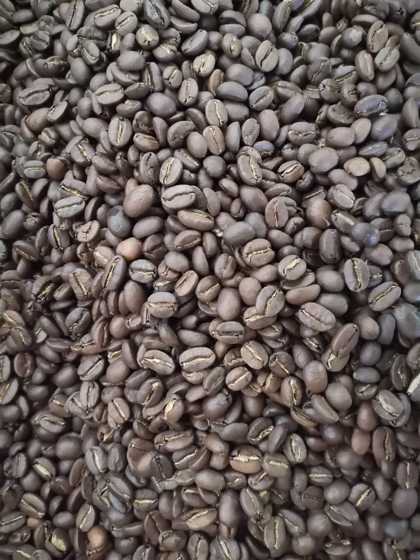

お店について
確認できた情報のみを掲載しています

- 新飯塚のたぬき通りにある、小さな喫茶店です。
- 新飯塚駅から徒歩5分ほどの場所にあります。
- かわいらしさと大人っぽさをあわせもつ空間で、時間帯によって雰囲気が変わると紹介されています。窓から陽が差し込む時間は、のんびりお茶をするのによいそうです。
- Instagramのプロフィールには「message, coffee, pudding」とあり、営業日は「月・木・日」と記載されています。
- コーヒー豆は飯塚の焙煎所のものを使っていると紹介されています。
店名「soel」の意味や開店の経緯は確認できていないため、掲載していません。営業時間などは変更される場合があります。最新情報はInstagramをご確認ください。

お店のコンセプト（制作側の案）
プロフィールの「message, coffee, pudding」という三つの言葉と、窓から陽が差し込む時間がよいという紹介から、このサンプルでは、カラメルのようなあたたかな黄色と、手紙のインクを思わせる深い青を基調にしました。「message」の意味はお店に確認できていないため断定しません。お店が公表しているコンセプトではありません。
メニュー
詳しいメニュー・価格は準備中です

- コーヒー
- プリン
- 自家製ジンジャーエール
上記は紹介記事などで確認できた品目です。価格・そのほかのメニュー・提供内容は準備中です。写真はイメージです。




口コミ（イメージ例）
以下は制作側で作成したイメージ例です
イメージ例
営業日に合わせて、昼下がりにふらっと寄ってみたい。コーヒーとプリンで、気持ちがゆるみそうです。
昼下がりを想像した例（創作です。実際のお客様の声ではありません）
イメージ例
静かに過ごせる場所があるのは心強い。ジンジャーエールを飲みながら、ゆっくり本を読みたいです。
静かな時間を想像した例（創作です。実際のお客様の声ではありません）
イメージ例
小さなお店なので、ひとりでも入りやすそう。店主さんとほどよい距離で話せたら嬉しいです。
ひとり時間を想像した例（創作です。実際のお客様の声ではありません）
アクセス
新飯塚駅から徒歩5分ほど
- 店名
- 喫茶 soel（ソエル）
- 住所
- 〒820-0005 福岡県飯塚市新飯塚18-20
- 電話
- 準備中
- 営業時間
- 準備中（Instagramに「月・木・日」の記載あり。時間は掲載元により異なるためご確認ください）
- 定休日
- 準備中
- @kissa_soel
掲載写真はフリー素材のイメージ写真で、店舗の実際の様子・商品ではありません。他地域で撮影されたものや撮影地が不明なものを含みます。